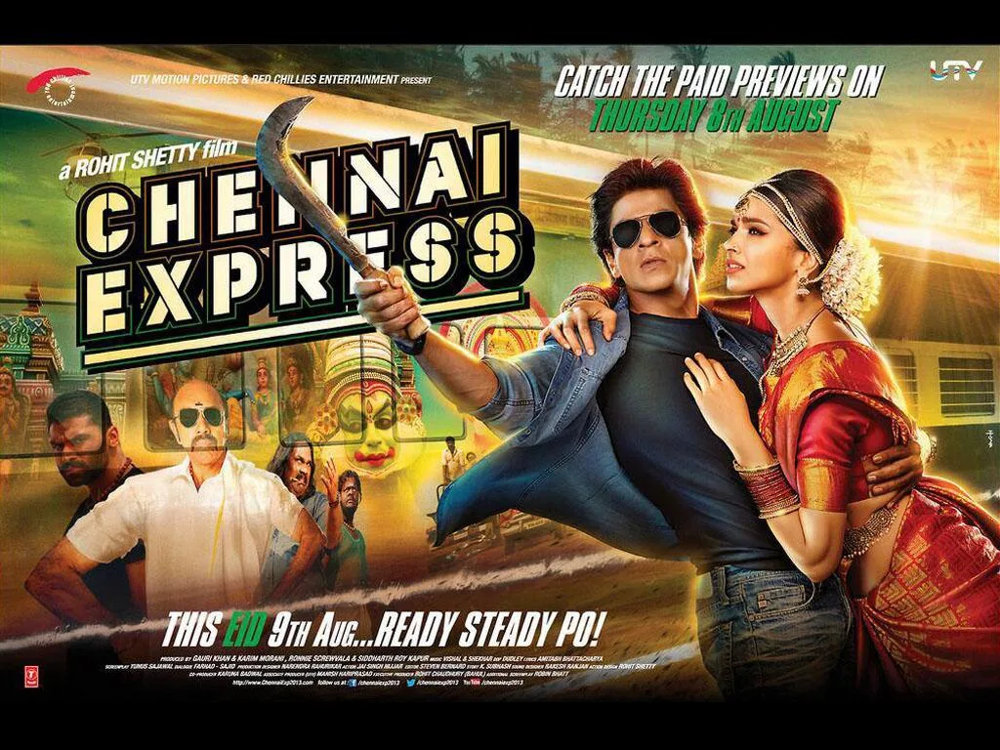
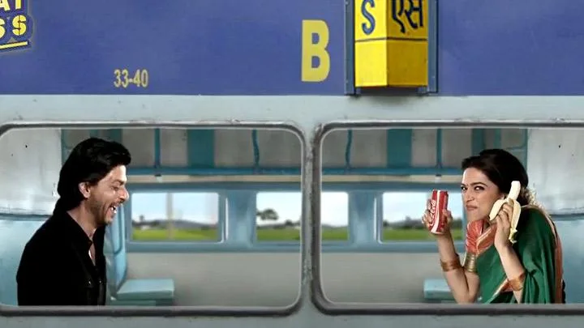

The Final Thesis · section 5 of 92
2. The benchmark: what made the original campaigns different?
A. RA.ONE and G.ONE: marketing as franchise creation
![[Update: New Footage!] Shah Rukh Khan's RA.ONE Website Opens With Tons Of Goodies!](img/image254.webp)


6
RA.ONE's documented marketing extended beyond the conventional trailer-and-poster cycle. The film's campaign included:
An official website and YouTube presence.
A Google+ live fan interaction, described in published accounts as > the first of its kind by an Indian film personality.
A multi-city promotional tour and a 3,600-foot-long fan-mail > installation.
Merchandise including toys, apparel, and tablets.
Games and technology-related promotional partnerships.
The merchandise and game activity was especially significant because it attempted to turn G.ONE into a recognisable character with a life beyond the film's theatrical run.

en.wikipedia.org
Professional interpretation: RA.ONE was not just a movie campaign. It was an attempt to establish a film-based entertainment IP and a consumer-facing ecosystem.
The merchandising dimension is particularly relevant to your argument. A toy, a game, a digital avatar, and a film character can reinforce each other. Each can be a different entry point into the same fictional world.
The key benchmark is therefore not the number of promotional impressions. It is whether the campaign creates a reusable relationship between character, audience, technology, and merchandise.
B. Chennai Express: the fan becomes part of the marketing mechanism



5
The case study documents an integrated programme, with the following elements:
| Innovation | What was actually built |
|---|---|
| Twitter trailer launch | Fans tweeted to move a virtual train from Mumbai to Rameshwaram; the trailer was released when the train arrived. |
| Official website | A standalone film identity integrated with social networks. |
| Browser games | Seven to eight games adapted for websites, mobile, and social platforms. |
| Mobile gaming | Escape from Rameshwaram, an endless-running game with Rahul and Meena, unlockable characters, obstacles, and upgrades. |
| Interactive video | Users could influence what Rahul did next and change the sequence of a romantic story. |
| Karaoke app | Fans sang film songs, shared scores, and dedicated songs to friends. |
| Permission-based SMS | A missed-call registration concept aimed at extending access to audiences beyond conventional social platforms. |
| Real-time analytics | Social listening, sentiment analysis, audience segmentation, competitor analysis, and daily campaign recalibration. |
Source: the supplied The Role of Digital Marketing & Social Media in the Phenomenal Success of Chennai Express, particularly pages 5–14.
ce_digitalcasestudy.pdf
The trailer mechanic is the clearest illustration of the difference between publicity and participation. A conventional trailer release asks people to watch. Chennai Express gave them a collective objective and a visible consequence for participating.
The game, karaoke, and interactive video then extended that participation into different forms of entertainment. They were not simply alternate formats for the same poster.
The performance evidence
The case study reports the following campaign results:
1 billion+
Cumulative tweet impressions reported over the 90-day campaign
750,000+
Tweets across campaign hashtags, as reported in the case study
25+
Fan clubs across countries collaborating in the campaign
18
Direct brand associations documented in the case study
These are historical figures reported by the campaign's case study, not independently audited measurements. They demonstrate the scale and mechanics reported by the team, rather than proving that digital marketing alone caused the film's box-office performance.
ce_digitalcasestudy.pdf
The case study also records a direct statement from Khan about the difficulty of adapting a movie to a game format, and his enthusiasm for the running game. It describes his belief in technology as a way of connecting with his audience.
That makes the creative-technology connection more than a theoretical interpretation: it is part of the contemporaneous campaign documentation.